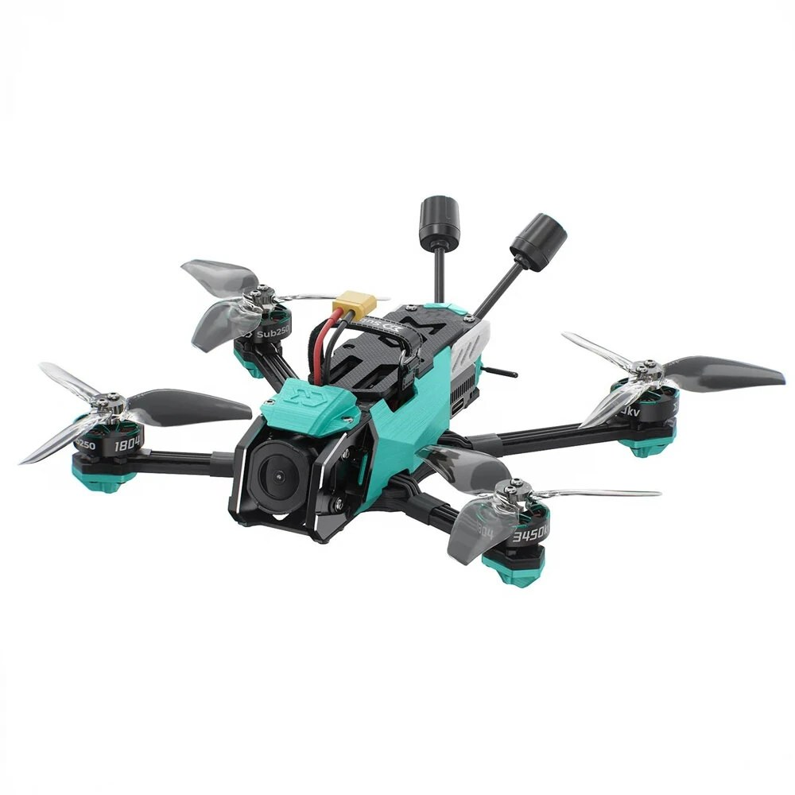

OA35
Build FPV modélisé pièce par pièce, du cliché au plan coté


STRATOS ROBOTICS
Un build FPV mené avec son propre outil : le dépôt OA35 contient un visualiseur 3D entièrement hors-ligne — Three.js est embarqué dans vendor/, il n'y a ni dépendance réseau ni build à lancer.
Le contour d'une pièce n'y est pas dessiné à l'œil : on dépose la photo de la pièce, elle est binarisée par seuil d'Otsu, puis le contour extérieur et chaque perçage sont suivis pixel par pixel. L'échelle se cale toute seule sur les motifs de perçage normalisés.
Trois onglets structurent le travail : Calibration photo pour tracer les pièces, Vue 3D pour monter le build — l'assemblage recale les pièces sur leurs perçages, au dixième de millimètre — et Plan coté pour la vue de dessus cotée sur grille 10 mm.
Le visualiseur gère aussi la visserie (détection et pose, entretoises M2/M3), la vue éclatée, le mode fil, l'export du plan en JSON et une boite de rangement imprimable pour toutes les pièces.
Fiche technique- Visualiseur 3D 100 % hors-ligne, Three.js embarqué, aucun CDN
- Tracé de contour au pixel : binarisation d'Otsu, suivi de contour, simplification et lissage réglables
- Mise à l'échelle automatique sur les motifs de perçage
- Assemblage recalant les pièces sur leurs perçages (19 pièces, jusqu'à 0,40 mm de correction)
- Visserie : détection et pose, création d'entretoises M2 / M3
- Vue éclatée, mode fil, repères de perçage, plan coté sur grille 10 mm
- Exports : plan JSON, STEP du build complet et du châssis, STL et 3MF des pièces imprimées
- Boîte de rangement paramétrique pour l'ensemble des pièces
FOLDAPE 4 — même approche, châssis pliant
DEXI 3 — même approche, sur CAO officielle
La seconde image est une capture du visualiseur du dépôt, build assemblé.